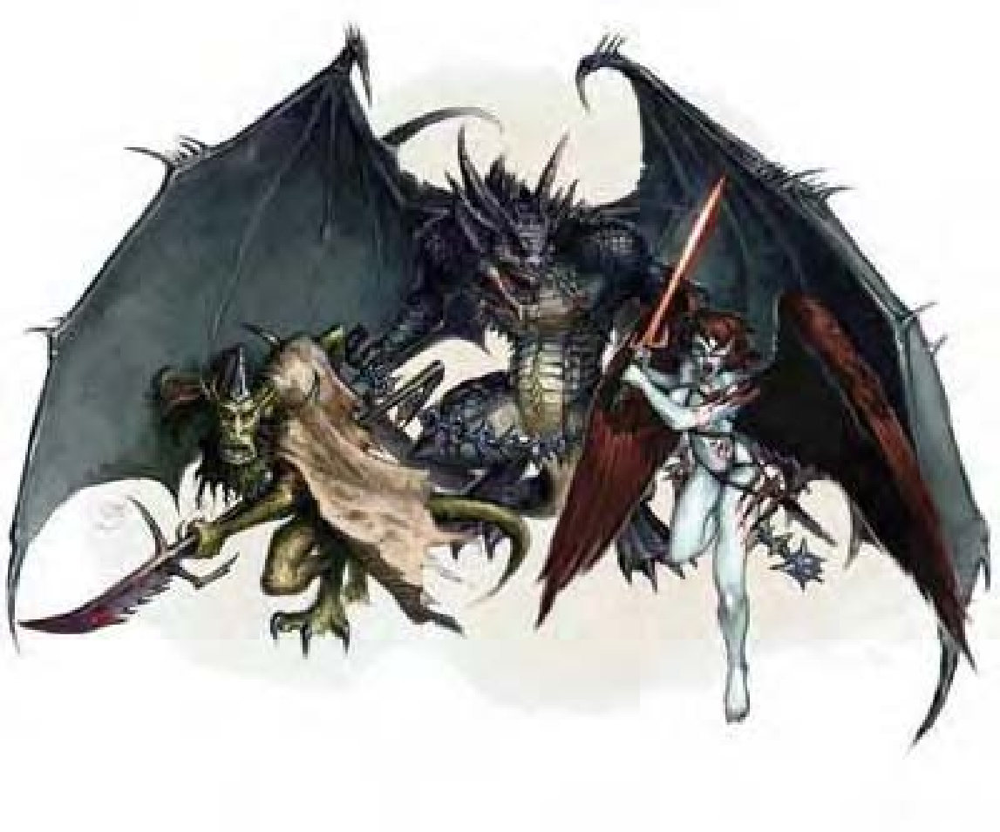

| 资料栏位 | 髯魔 (Barbazu) 中型异界生物 (巴特、邪恶、外界、守序) |
|---|---|
| 生命骰 | 6d8+18 (45HP) |
| 先攻 | +6 |
| 速度 | 40英尺 (8格) |
| 防御等级 | 19 (+2敏捷、+7天生)、接触12、措手不及17 |
| 基本攻击/擒抱 | +6 / +8 |
| 攻击 | 大砍刀+9近战 (1d10+3附加炼狱伤害)；或爪抓+8近战 (1d6+2) |
| 全力攻击 | 大砍刀+9 / +4近战 (1d10+3附加炼狱伤害)；或 2爪抓+8近战 (1d6+2) |
| 占据/触及 | 5英尺 / 5英尺 (使用大砍刀时10英尺) |
| 特殊攻击 | 炼狱伤害、髯击、狂战、“召唤巴特魔族” |
| 特殊能力 | 伤害减免5/银或善良、黑暗视觉60英尺、对火焰与毒素免疫、强酸抗力10、寒冷抗力10、黑暗中视物、法术抗力17、心灵感应100英尺 |
| 豁免 | 强韧+8、反射+7、意志+5 |
| 属性 | 力量15、敏捷15、体质17、智力6、感知10、魅力10 |
| 技能 | 攀爬+11、交涉+2、躲藏+11、聆听+9、潜行+9、察言观色+9、侦察+9 |
| 专长 | 精通先攻、猛力攻击、专攻武器 (大砍刀) |
| 环境 | 巴托九狱 |
| 组织 | 单独、成双、组队 (3-5) 或中队 (6-10) |
| 挑战级数 | 5 |
| 宝藏 | 标准 |
| 阵营 | 总是守序邪恶 |
| 进化 | 7-9HD (中型) ; 10-28HD (大型) |
| 等级修正值 | +6 |
该生物最显著的特征就是手中持用的锯齿大砍刀。尖耳与潮湿的有鳞皮肤说明了其来自异界的身份。有着长尾巴，手脚带爪，头部狡黠恶心。髯魔，亦称巴霸魔，是地狱军团的突击队，带领无数劣魔冲锋陷阵。在战时，他们可以充任强大魔鬼的守卫与哨兵。每个髯魔都带着一把大砍刀。髯魔6英尺高，约225磅重。
战斗髯魔极具侵略性，热爱战斗。他们喜欢使用狂战，在敌人阵中制造混乱。在计算伤害减免时，髯魔的天生武器与持有武器都视为邪恶阵营与守序阵营。
类法术能力：随意施展――“高等传送术”（自身加上50磅重物品）。施法者等级12。
炼狱伤害（超自然）：髯魔大砍刀造成的伤害是持续性的。受伤生物每轮额外失去2点生命值。该伤害无法以自然医疗，同时对医疗法术有抵抗性。通过“医疗”检定（DC=16）或施以治疗伤害法术、医疗法术，才可阻止生命值持续下降。然而，若欲施展治疗伤害法术、医疗法术于该受伤人物，施法者必须先通过施法者等级检定（DC=16），否则法术无效。上述“医疗”检定成功自动阻止生命值持续下降，亦可恢复生命值。炼狱伤害为髯魔的超自然能力，并非武器特性。豁免DC的调整值与体质调整值相同。
髯击（特异）：若髯魔两次爪抓攻击均命中同一对手，则自动被其虬髯击中。对手受伤1d8+2点，且必须通过强韧检定（DC=16），否则即染上恶疾魔鬼寒（潜伏期1d4天，造成1d4力量伤害）。伤害每天均发生，直到感染生物连续通过三次强韧检定（DC=16）、接受魔法治疗或该生物死亡为止。豁免DC的调整值与体质调整值相同。
狂战（特异）：每天2次，髯魔可进入狂战状态，类似野蛮人的狂暴能力（力量+4、体质+4、意志检定时具有+2士气加值、AC有-2减值）。狂战持续6轮，结束后无任何不良影响。
“召唤巴特魔族”（类法术能力）：每天1次，髯魔可召唤2d10个劣魔，成功机率为50%；或者召唤另一个髯魔，成功机率为35%。此能力等同于三级法术。